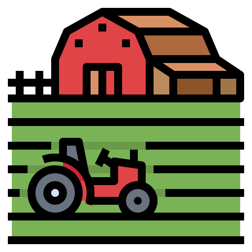
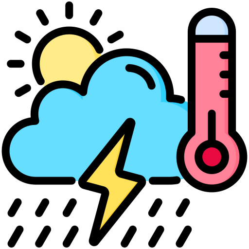
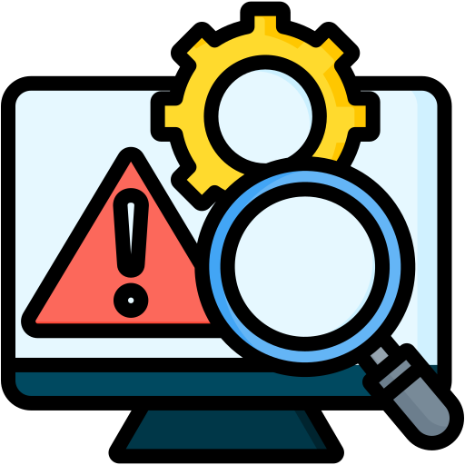

What We Offer

Farm Management & Tracking
Track your farm’s harvest and storage details with our easy-to-use management system.
Farm Manager
Weather & Forecast Integration
Get live weather data and forecasts to plan your harvest and storage effectively.
See Weather
Risk Alerts & Notifications
Receive timely alerts to protect your crops from spoilage or adverse weather conditions.
Risk Forecast